look for patternstinkerdescribevisualizerepresent symbolicallyprovecheck for plausibilitytake things apartconjecturechange or simplify the problemwork backwardsre-examine the problemchange representationscreate
look for patternstinkerdescribevisualizerepresent symbolicallyprovecheck for plausibilitytake things apartconjecturechange or simplify the problemwork backwardsre-examine the problemchange representationscreate
look for patternstinkerdescribevisualizerepresent symbolicallyprovecheck for plausibilitytake things apartconjecturechange or simplify the problemwork backwardsre-examine the problemchange representationscreate
look for patternstinkerdescribevisualizerepresent symbolicallyprovecheck for plausibilitytake things apartconjecturechange or simplify the problemwork backwardsre-examine the problemchange representationscreate
look for patternstinkerdescribevisualizerepresent symbolicallyprovecheck for plausibilitytake things apartconjecturechange or simplify the problemwork backwardsre-examine the problemchange representationscreate
look for patternstinkerdescribevisualizerepresent symbolicallyprovecheck for plausibilitytake things apartconjecturechange or simplify the problemwork backwardsre-examine the problemchange representationscreate
look for patternstinkerdescribevisualizerepresent symbolicallyprovecheck for plausibilitytake things apartconjecturechange or simplify the problemwork backwardsre-examine the problemchange representationscreate
look for patternstinkerdescribevisualizerepresent symbolicallyprovecheck for plausibilitytake things apartconjecturechange or simplify the problemwork backwardsre-examine the problemchange representationscreate
look for patternstinkerdescribevisualizerepresent symbolicallyprovecheck for plausibilitytake things apartconjecturechange or simplify the problemwork backwardsre-examine the problemchange representationscreate
look for patternstinkerdescribevisualizerepresent symbolicallyprovecheck for plausibilitytake things apartconjecturechange or simplify the problemwork backwardsre-examine the problemchange representationscreate
look for patternstinkerdescribevisualizerepresent symbolicallyprovecheck for plausibilitytake things apartconjecturechange or simplify the problemwork backwardsre-examine the problemchange representationscreate
look for patternstinkerdescribevisualizerepresent symbolicallyprovecheck for plausibilitytake things apartconjecturechange or simplify the problemwork backwardsre-examine the problemchange representationscreate
look for patternstinkerdescribevisualizerepresent symbolicallyprovecheck for plausibilitytake things apartconjecturechange or simplify the problemwork backwardsre-examine the problemchange representationscreate
look for patternstinkerdescribevisualizerepresent symbolicallyprovecheck for plausibilitytake things apartconjecturechange or simplify the problemwork backwardsre-examine the problemchange representationscreate
look for patternstinkerdescribevisualizerepresent symbolicallyprovecheck for plausibilitytake things apartconjecturechange or simplify the problemwork backwardsre-examine the problemchange representationscreate
look for patternstinkerdescribevisualizerepresent symbolicallyprovecheck for plausibilitytake things apartconjecturechange or simplify the problemwork backwardsre-examine the problemchange representationscreate
look for patternstinkerdescribevisualizerepresent symbolicallyprovecheck for plausibilitytake things apartconjecturechange or simplify the problemwork backwardsre-examine the problemchange representationscreate
look for patternstinkerdescribevisualizerepresent symbolicallyprovecheck for plausibilitytake things apartconjecturechange or simplify the problemwork backwardsre-examine the problemchange representationscreate
look for patternstinkerdescribevisualizerepresent symbolicallyprovecheck for plausibilitytake things apartconjecturechange or simplify the problemwork backwardsre-examine the problemchange representationscreate
look for patternstinkerdescribevisualizerepresent symbolicallyprovecheck for plausibilitytake things apartconjecturechange or simplify the problemwork backwardsre-examine the problemchange representationscreate
Habits
look for patternstinkerdescribevisualizerepresent symbolicallyprovecheck for plausibilitytake things apartconjecturechange or simplify the problemwork backwardsre-examine the problemchange representationscreate
look for patternstinkerdescribevisualizerepresent symbolicallyprovecheck for plausibilitytake things apartconjecturechange or simplify the problemwork backwardsre-examine the problemchange representationscreate
look for patternstinkerdescribevisualizerepresent symbolicallyprovecheck for plausibilitytake things apartconjecturechange or simplify the problemwork backwardsre-examine the problemchange representationscreate
look for patternstinkerdescribevisualizerepresent symbolicallyprovecheck for plausibilitytake things apartconjecturechange or simplify the problemwork backwardsre-examine the problemchange representationscreate
look for patternstinkerdescribevisualizerepresent symbolicallyprovecheck for plausibilitytake things apartconjecturechange or simplify the problemwork backwardsre-examine the problemchange representationscreate
look for patternstinkerdescribevisualizerepresent symbolicallyprovecheck for plausibilitytake things apartconjecturechange or simplify the problemwork backwardsre-examine the problemchange representationscreate
look for patternstinkerdescribevisualizerepresent symbolicallyprovecheck for plausibilitytake things apartconjecturechange or simplify the problemwork backwardsre-examine the problemchange representationscreate
look for patternstinkerdescribevisualizerepresent symbolicallyprovecheck for plausibilitytake things apartconjecturechange or simplify the problemwork backwardsre-examine the problemchange representationscreate
look for patternstinkerdescribevisualizerepresent symbolicallyprovecheck for plausibilitytake things apartconjecturechange or simplify the problemwork backwardsre-examine the problemchange representationscreate
look for patternstinkerdescribevisualizerepresent symbolicallyprovecheck for plausibilitytake things apartconjecturechange or simplify the problemwork backwardsre-examine the problemchange representationscreate
look for patternstinkerdescribevisualizerepresent symbolicallyprovecheck for plausibilitytake things apartconjecturechange or simplify the problemwork backwardsre-examine the problemchange representationscreate
look for patternstinkerdescribevisualizerepresent symbolicallyprovecheck for plausibilitytake things apartconjecturechange or simplify the problemwork backwardsre-examine the problemchange representationscreate
look for patternstinkerdescribevisualizerepresent symbolicallyprovecheck for plausibilitytake things apartconjecturechange or simplify the problemwork backwardsre-examine the problemchange representationscreate
look for patternstinkerdescribevisualizerepresent symbolicallyprovecheck for plausibilitytake things apartconjecturechange or simplify the problemwork backwardsre-examine the problemchange representationscreate
look for patternstinkerdescribevisualizerepresent symbolicallyprovecheck for plausibilitytake things apartconjecturechange or simplify the problemwork backwardsre-examine the problemchange representationscreate
look for patternstinkerdescribevisualizerepresent symbolicallyprovecheck for plausibilitytake things apartconjecturechange or simplify the problemwork backwardsre-examine the problemchange representationscreate
look for patternstinkerdescribevisualizerepresent symbolicallyprovecheck for plausibilitytake things apartconjecturechange or simplify the problemwork backwardsre-examine the problemchange representationscreate
look for patternstinkerdescribevisualizerepresent symbolicallyprovecheck for plausibilitytake things apartconjecturechange or simplify the problemwork backwardsre-examine the problemchange representationscreate
look for patternstinkerdescribevisualizerepresent symbolicallyprovecheck for plausibilitytake things apartconjecturechange or simplify the problemwork backwardsre-examine the problemchange representationscreate
look for patternstinkerdescribevisualizerepresent symbolicallyprovecheck for plausibilitytake things apartconjecturechange or simplify the problemwork backwardsre-examine the problemchange representationscreate
of Mind
look for patterns
to look for patterns amongst a set of numbers or figures
tinker
to play around with numbers, figures, or other mathematical expressions in order to learn something more about them or the situation; experiment
describe
to describe clearly a problem, a process, a series of steps to a solution; modulate the language (its complexity or formalness) depending on the audience
visualize
to draw, or represent in some fashion, a diagram in order to help understand a problem; to interpret or vary a given diagram
represent symbolically
to use algebra to solve problems efficiently and to have more confidence in one’s answer, and also so as to communicate solutions more persuasively, to acquire deeper understanding of problems, and to investigate the possibility of multiple solutions
prove
to desire that a statement be proved to you or by you; to engage in dialogue aimed at clarifying an argument; to establish a deductive proof; to use indirect reasoning or a counterexample as a way of constructing an argument
check for plausibility
to routinely check the reasonableness of any statement in a problem or its proposed solution, regardless of whether it seems true or false on initial impression; to be particularly skeptical of results that seem contradictory or implausible, whether the source be peer, teacher, evening news, book, newspaper, internet or some other; and to look at special and limiting cases to see if a formula or an argument makes sense in some easily examined specific situations
take things apart
to break a large or complex problem into smaller chunks or cases, achieve some understanding of these parts or cases, and rebuild the original problem; to focus on one part of a problem (or definition or concept) in order to understand the larger problem
conjecture
to generalize from specific examples; to extend or combine ideas in order to form new ones
change or simplify the problem
to change some variables or unknowns to numbers; to change the value of a constant to make the problem easier; change one of the conditions of the problem; to reduce or increase the number of conditions; to specialize the problem; make the problem more general
work backwards
to reverse a process as a way of trying to understand it or as a way of learning something new; to work a problem backwards as a way of solving
re-examine the problem
to look at a problem slowly and carefully, closely examining it and thinking about the meaning and implications of each term, phrase, number and piece of information given before trying to answer the question posed
change representations
to look at a problem from a different perspective by representing it using mathematical concepts that are not directly suggested by the problem; to invent an equivalent problem, about a seemingly different situation, to which the present problem can be reduced; to use a different field (mathematics or other) from the present problem’s field in order to learn more about its structure
create
to invent mathematics both for utilitarian purposes (such as in constructing an algorithm) and for fun (such as in a mathematical game); to posit a series of premises (axioms) and see what can be logically derived from them
look for patternstinkerdescribevisualizerepresent symbolicallyprovecheck for plausibilitytake things apartconjecturechange or simplify the problemwork backwardsre-examine the problemchange representationscreate
look for patternstinkerdescribevisualizerepresent symbolicallyprovecheck for plausibilitytake things apartconjecturechange or simplify the problemwork backwardsre-examine the problemchange representationscreate
look for patternstinkerdescribevisualizerepresent symbolicallyprovecheck for plausibilitytake things apartconjecturechange or simplify the problemwork backwardsre-examine the problemchange representationscreate
look for patternstinkerdescribevisualizerepresent symbolicallyprovecheck for plausibilitytake things apartconjecturechange or simplify the problemwork backwardsre-examine the problemchange representationscreate
look for patternstinkerdescribevisualizerepresent symbolicallyprovecheck for plausibilitytake things apartconjecturechange or simplify the problemwork backwardsre-examine the problemchange representationscreate
look for patternstinkerdescribevisualizerepresent symbolicallyprovecheck for plausibilitytake things apartconjecturechange or simplify the problemwork backwardsre-examine the problemchange representationscreate
look for patternstinkerdescribevisualizerepresent symbolicallyprovecheck for plausibilitytake things apartconjecturechange or simplify the problemwork backwardsre-examine the problemchange representationscreate
look for patternstinkerdescribevisualizerepresent symbolicallyprovecheck for plausibilitytake things apartconjecturechange or simplify the problemwork backwardsre-examine the problemchange representationscreate
look for patternstinkerdescribevisualizerepresent symbolicallyprovecheck for plausibilitytake things apartconjecturechange or simplify the problemwork backwardsre-examine the problemchange representationscreate
look for patternstinkerdescribevisualizerepresent symbolicallyprovecheck for plausibilitytake things apartconjecturechange or simplify the problemwork backwardsre-examine the problemchange representationscreate
look for patternstinkerdescribevisualizerepresent symbolicallyprovecheck for plausibilitytake things apartconjecturechange or simplify the problemwork backwardsre-examine the problemchange representationscreate
look for patternstinkerdescribevisualizerepresent symbolicallyprovecheck for plausibilitytake things apartconjecturechange or simplify the problemwork backwardsre-examine the problemchange representationscreate
look for patternstinkerdescribevisualizerepresent symbolicallyprovecheck for plausibilitytake things apartconjecturechange or simplify the problemwork backwardsre-examine the problemchange representationscreate
look for patternstinkerdescribevisualizerepresent symbolicallyprovecheck for plausibilitytake things apartconjecturechange or simplify the problemwork backwardsre-examine the problemchange representationscreate
look for patternstinkerdescribevisualizerepresent symbolicallyprovecheck for plausibilitytake things apartconjecturechange or simplify the problemwork backwardsre-examine the problemchange representationscreate
look for patternstinkerdescribevisualizerepresent symbolicallyprovecheck for plausibilitytake things apartconjecturechange or simplify the problemwork backwardsre-examine the problemchange representationscreate
look for patternstinkerdescribevisualizerepresent symbolicallyprovecheck for plausibilitytake things apartconjecturechange or simplify the problemwork backwardsre-examine the problemchange representationscreate
look for patternstinkerdescribevisualizerepresent symbolicallyprovecheck for plausibilitytake things apartconjecturechange or simplify the problemwork backwardsre-examine the problemchange representationscreate
look for patternstinkerdescribevisualizerepresent symbolicallyprovecheck for plausibilitytake things apartconjecturechange or simplify the problemwork backwardsre-examine the problemchange representationscreate
look for patternstinkerdescribevisualizerepresent symbolicallyprovecheck for plausibilitytake things apartconjecturechange or simplify the problemwork backwardsre-examine the problemchange representationscreate
Habits
look for patternstinkerdescribevisualizerepresent symbolicallyprovecheck for plausibilitytake things apartconjecturechange or simplify the problemwork backwardsre-examine the problemchange representationscreate
look for patternstinkerdescribevisualizerepresent symbolicallyprovecheck for plausibilitytake things apartconjecturechange or simplify the problemwork backwardsre-examine the problemchange representationscreate
look for patternstinkerdescribevisualizerepresent symbolicallyprovecheck for plausibilitytake things apartconjecturechange or simplify the problemwork backwardsre-examine the problemchange representationscreate
look for patternstinkerdescribevisualizerepresent symbolicallyprovecheck for plausibilitytake things apartconjecturechange or simplify the problemwork backwardsre-examine the problemchange representationscreate
look for patternstinkerdescribevisualizerepresent symbolicallyprovecheck for plausibilitytake things apartconjecturechange or simplify the problemwork backwardsre-examine the problemchange representationscreate
look for patternstinkerdescribevisualizerepresent symbolicallyprovecheck for plausibilitytake things apartconjecturechange or simplify the problemwork backwardsre-examine the problemchange representationscreate
look for patternstinkerdescribevisualizerepresent symbolicallyprovecheck for plausibilitytake things apartconjecturechange or simplify the problemwork backwardsre-examine the problemchange representationscreate
look for patternstinkerdescribevisualizerepresent symbolicallyprovecheck for plausibilitytake things apartconjecturechange or simplify the problemwork backwardsre-examine the problemchange representationscreate
look for patternstinkerdescribevisualizerepresent symbolicallyprovecheck for plausibilitytake things apartconjecturechange or simplify the problemwork backwardsre-examine the problemchange representationscreate
look for patternstinkerdescribevisualizerepresent symbolicallyprovecheck for plausibilitytake things apartconjecturechange or simplify the problemwork backwardsre-examine the problemchange representationscreate
look for patternstinkerdescribevisualizerepresent symbolicallyprovecheck for plausibilitytake things apartconjecturechange or simplify the problemwork backwardsre-examine the problemchange representationscreate
look for patternstinkerdescribevisualizerepresent symbolicallyprovecheck for plausibilitytake things apartconjecturechange or simplify the problemwork backwardsre-examine the problemchange representationscreate
look for patternstinkerdescribevisualizerepresent symbolicallyprovecheck for plausibilitytake things apartconjecturechange or simplify the problemwork backwardsre-examine the problemchange representationscreate
look for patternstinkerdescribevisualizerepresent symbolicallyprovecheck for plausibilitytake things apartconjecturechange or simplify the problemwork backwardsre-examine the problemchange representationscreate
look for patternstinkerdescribevisualizerepresent symbolicallyprovecheck for plausibilitytake things apartconjecturechange or simplify the problemwork backwardsre-examine the problemchange representationscreate
look for patternstinkerdescribevisualizerepresent symbolicallyprovecheck for plausibilitytake things apartconjecturechange or simplify the problemwork backwardsre-examine the problemchange representationscreate
look for patternstinkerdescribevisualizerepresent symbolicallyprovecheck for plausibilitytake things apartconjecturechange or simplify the problemwork backwardsre-examine the problemchange representationscreate
look for patternstinkerdescribevisualizerepresent symbolicallyprovecheck for plausibilitytake things apartconjecturechange or simplify the problemwork backwardsre-examine the problemchange representationscreate
look for patternstinkerdescribevisualizerepresent symbolicallyprovecheck for plausibilitytake things apartconjecturechange or simplify the problemwork backwardsre-examine the problemchange representationscreate
look for patternstinkerdescribevisualizerepresent symbolicallyprovecheck for plausibilitytake things apartconjecturechange or simplify the problemwork backwardsre-examine the problemchange representationscreate
of Mind
geometric tinkering
When you have a diagram, it is sometimes helpful to Fill
in all the Information you Can, even if you think it has
nothing to do with the problem you have to solve. This is
another example of tinkering. Doing this will help you to see
patterns and to notice things about the diagram that you
might not have noticed otherwise. It is a wonderful thing to
do when you are stuck on a problem.
The radius of the smallest circle is one unit. What is
the ratio of
the area of the largest circle to the area of the smallest
circle?
In the problem on the previous page, rather than trying to figure out the
ratio of the two areas immediately, it makes more sense to
figure out some smaller, manageable thing about the figure,
and see where that leads us. A clear place to start is with
the smallest circle. Once we find the area of that circle, we
can then find the square that surrounds it. Can we then find
the area of the second largest circle? By looking at the
smallest parts, we can see the pattern which allows us to
solve the original problem.
In your previous experience with geometry, you probably
learned some basic facts about angles, lines, and triangles.
For instance, two angles that form a line add up to 180
degrees, and so do the three angles of a triangle. You may
also know that, in an isosceles triangle, the angles opposite
the sides that are the same length are also the same. These
facts will help you with many of the problems that
follow.
The two marked lengths are congruent. Find the measures
of all the angles in
the figure.
Find the measures of all the angles
in the figure.
The area of this hexagon is 60. Find the product of the
lengths of the segments AB and BC.
A smaller circle has radius 2 and a larger circle has
radius 3. $A$ and $D$ are points on the tops of these circles.
The circles are touching in the middle, as shown.
Find the distance from $A$ to $D$.
Given that the four marked lengths are congruent, find
$x$.
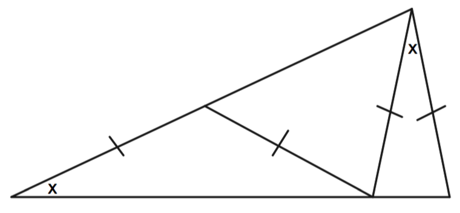
In the following diagram, $BC=5$, $AC=4$, and the circle $B$
has four times the area of circle $A$. Find the area of
circle $C$.
Find $x$.
Draw a square with vertices A, B, C, and D, in that
order. Then draw an equilateral triangle with vertices A,
B, and E, where E is a point outside the square. Connect
points E and C with a line segment. Find the measure of
angle ECB.
Repeat the previous problem, but this time place point E
inside the square. Again, find the measure of angle
ECB.
Find the measure of angle ABC.
Prove that the large triangle below is a right triangle.
It may help to label some angles $x$ and other angles $y$ (give
angles the same letter if you know they are the
same!)
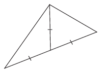
Find $x$.
Find $x$.
Find $x$.
A rectangular solid always has 12 edges (count the edges of a tissue box), and 6 faces (count the 2D rectangles that form the tissue box.) Each face of a rectangular solid has two diagonals, formed by connecting opposite corners.
Find the dimensions of a rectangular solid where the 12 edges and the diagonals on all 6 faces are integers.
The triangle below is equilateral. Find the area of the
circle.
The triangle below is the famous “3-4-5” right triangle;
famous because it is one
of the simplest triangles that satisfies the Pythagorean
theorem: ${3^2} + {4^2} = {5^2}$.
As you can see, the 3-4-5 right triangle has been placed
in a rectangle. What is the height of the rectangle?
Three squares are lined up along the x-axis as shown,
and the points with coordinates (0,4) and (21, 12) are
labeled accordingly. Find AB.
Copyright mathleague.com.
Lesson 1:
Similar Triangles
Introduction
Thales of Miletus (625-547 B.C.) is generally regarded as
the first of the Seven Wise Men of antiquity. Among other
things, he is known for having calculated the height of the
Great Pyramid in Egypt using the length of its shadow when
compared to a stick in the ground and its shadow at the same
time of the day.
Inspired by Thales’ method, Robert and Mary calculated the
height of a tree. At a certain time of day, Robert stood at a
point such that the tip of his shadow coincided with the tip
of the tree’s shadow. Then they measured both the shadow of
Robert, who is 1.8 m tall, and the shadow of the tree. They
found that Robert’s shadow was 4.32 m and the tree’s shadow
was 18 m long. With this information they were able to
calculate the height of the tree to be 7.5 m. Could you
explain how they might have found the height of the tree?
Taking things apart in the figure in Problem 1, we have
two triangles. One right triangle whose legs are the tree and
its shadow, and another right triangle whose legs are Robert
and his shadow (see figure below). What can you conjecture
about the angles in these two triangles? Explain your
answer.
Development
Kristi is sitting in the back seat of her parents’ car,
driving from Omaha, NE to visit her grandparents in
Hastings.
The scale on her map is 1 inch = 20 miles. She’s using a
Bazooka gum wrapper, which she knows is 1.5 inches long, to
estimate distances.
When leaving her parents’ garage,
Kristi first opens the map, she notices that there are about
five gum wrapper lengths from Omaha to Hastings. How many
miles will her trip be?
How many “gum wrapper lengths” will
Kristi measure between her position on the map and Hastings
if she is 100 miles away from Hastings?
Much later in the trip, Kristi
notices that the distance remaining on the map is about a
third of a gum wrapper. How many miles are remaining?
In Baltimore, Maryland, Union Memorial Hospital is the
largest building in the triangular region bounded by E
University Pkwy, N Calvert St, and E 33rd St (the higher on
the map below). If the Union Memorial Hospital’s left side,
the side on N Calvert St, is 250 meters long, use the map
below to estimate the other two side lengths of this
triangular region. You can either measure with a ruler or
measure with some other object, like Kristi.
In Middle School, you may have learned how to scale down (or
up) a figure.
In fact, you may now realize that in doing dilations or
contractions, you are changing the scale of a figure. When you
scale a figure by a factor of $r$, your
new figure will have lengths $r$ times the corresponding lengths
of the original
figure. This can also be expressed by saying that the sides of
the second figure are proportional to the corresponding sides
of the first figure by a factor of $r$. In this case, we say as
well that the second figure is a scaled copy of the first
figure by a factor of $r$.
Below there are some pairs of figures. In Part b, the
segments in each figure are perpendicular. Determine whether
or not one is a scaled copy of the other. Explain.
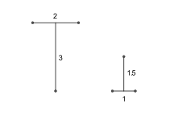
Two triangles are given in the picture below.
Take whatever measurements and do
whatever calculations are necessary to check whether or not the
two triangles are scaled copies of each other. If they are,
determine the scale factor.
Determine the coordinates of the
triangle $\triangle A'B'C'$
obtained when you translate triangle $\triangle ABC$ 1 unit down.
Based on your answer to Question (b),
what can you conclude about $\angle B$ and $\angle E$?
What can you say about the two other
pairs of angles $\angle A$ and $\angle D$, and $\angle
C$ and $\angle F$? Explain.
Triangle $\triangle DEF$ is the image of under a dilation centered at the
origin $O\left( {0,0} \right)$.
Are triangles $\triangle ABC$ and $\triangle DEF$ scaled copies of
each other? If so, what is the scale factor? Explain.
How are the angles of triangle $\triangle ABC$
related to the angles of $\triangle DEF$? Explain.
In our study of dilations, you may have noticed that the
angles of the image of a figure under a dilation have the same
measurements as the corresponding angles of the original
figure. What’s more, you can see in Problem 7 that the
following relationship holds:
side length of image = (scale factor) $\cdot$ (side length of corresponding side in
original figure)
The next two problems use the important vocabulary word
congruent. Two angles are congruent if they have the same
measure, just as two line segments are congruent if they have
the same length.
Discuss the following statement with the members of your
group.
“If the three angles of a
triangle are congruent to the three angles of a second
triangle, then the triangles are scaled copies of each
other.”
If you disagree, give a
counterexample showing that this statement is false.
Now examine the following statement.
“If two angles of a
triangle are congruent to two angles of another triangle, then
the triangles are scaled copies of each other.”
If you disagree, give a
counterexample showing that this statement is false.
The word similar is used in mathematics to describe two
triangles that are scaled copies of each other. Similarity
plays an important role in the design of large or small objects
such as automobiles, airplanes, or integrated circuits. As a
matter of fact, before building an automobile, engineers sketch
out scale drawings and use them to build scale models which
they then use to run tests. Also, as we saw in the introduction
of this section, Thales of Miletus may have used similar
triangles to calculate the height of the Great Pyramid in
Egypt, more than 2500 years ago. Similarity is thus a
mathematical instrument that allows us to zoom in or zoom out
when examining the physical world.
Thus far, you have discovered several features of similar
triangles.
Why does it make sense to use the
word “similar” to describe two triangles that are scaled
copies of each other?
If two triangles are similar, how
are their angles related? How are their sides related?
If you are given a $\triangle ABC$, describe a
procedure for drawing a $\triangle A'B'C'$ similar to it.
Practice
In many of the problems that follow, you will see a
convention that will be used throughout your high school
career. If two angles are marked with arcs that are the same
style (both bold, or double instead of single), that means
those angles are congruent.
Calculate the lengths of the sides marked by small
letters. Angles marked equally have the same angle
measurement.
Calculate $x$ and $y$.
Calculate $q$.
Calculate $a$.
Calculate $h$.
In the figure below, angles marked equally have the same
angle measurement.
Find the perimeter of triangle $\triangle ABC$.
Triangle $\triangle DEF$ is a scaled copy of $\triangle ABC$. What
is the scale factor?
What is the ratio of the perimeter of $\triangle DEF$
to the perimeter of $\triangle ABC$?
What is the ratio of the area of $\triangle DEF$ to
the area of $\triangle ABC$?
In the figure below, what is the ratio of $x$ to $y$?
Claudia and Rodolfo were walking together on a sunny day.
Claudia is 1.5 meters tall and casts a 2.1-meter shadow. How
tall is her taller brother Rodolfo if he casts a shadow at
the same time which is 0.42 meters longer?
Examine the following statement.
“If two triangles have one pair of angles congruent, the
triangles are similar.”
If you disagree, give a counterexample showing that this
statement is false.
Further Development
Jasmine has two triangles with equal angle
measurements.
The sides of one triangle are 4, 6, and 8. The sides of the
other are 9, 6, 12. She says that the triangles are not
scaled copies because:
$$\frac{4}{9} = 0.444..., \textrm{ } \frac{6}{6}=1, \textrm{ and }\frac{8}{{12}} =
0.666...$$
Do you agree with Jasmine? Thoroughly explain your answer.
In two similar triangles, angles with the same measure are
called corresponding
angles, and sides opposite corresponding angles are called
corresponding sides. As a matter of fact, in the previous
problem, $\angle A$ and $\angle R$ are
corresponding angles, and $\overline {BC}$ and $\overline {PQ}$
are corresponding sides. Given
misunderstandings such as that of Jasmine’s in the previous
problem, it is
important to state explicitly what pair of angles have the same
measurement when describing similar triangles. A natural way of
doing this is by listing their corresponding angles in the same
order. Thus, regarding the triangles in the previous exercise,
we say that $\triangle ABC$ and $\triangle RQP$ are similar, and write $\triangle ABC \sim \triangle RQP$. The symbol $\sim $ is read “is similar to.”
$\triangle BUD \sim \triangle PAT$
$BU = 7$, $UD = 8$,
$BD = 10$, and $PT = 12$.
Draw the figure and find
$PA$.
Let $\triangle DEF \sim \triangle ABC$.
List all pairs of corresponding
sides.
Let $k$ be the scale factor, that is,
the lengths of the sides of $\triangle DEF$ are $k$ times the lengths of the
corresponding sides of $\triangle ABC$. So, for example, $AB = k\cdot ED$.
Write two more equations
involving $k$, each one using a different pair of sides.
Solve each of the three equations for
$k$.
In part c, you should have found
three quantities that all equal $k$. Translate this into a
statement about side lengths
in similar triangles.
In the previous problem you may have concluded that if $\triangle DEF \sim \triangle ABC$,
then
These equalities are also used to express that in two
similar triangles corresponding sides are proportional. These
equalities allow us to relate corresponding sides of similar
triangles without explicitly mentioning the scale factor.
In the following figure, angles marked equally have the
same angle measurements.
Take into account the convention
stated in the paragraph above problem 17 to determine whether
or not $\triangle ABC \sim \triangle DEF$. Explain your answer.
Describe the relationship between
these two triangles using the $\sim$ notation.
Below, you have a list of equalities
between two ratios
relating to the triangles above. Determine which ones
are true and which ones are false, if any. Explain.
Practice
In the following figure, angles marked equally have the
same angle measurements.
Is $\triangle PRQ \sim \triangle STU$? Explain your answer.
Describe the relationship between
these two triangles using the $\sim$ notation.
Find $r$ and $u$.
In the following figure, angles marked equally have the
same angle measurements, and $\overline {BD} $ and $\overline
{AE} $ intersect at $C$.
Describe the relationship between
these two triangles using the $\sim$ notation.
Find $x$ and $y$.
In this problem, you needed to use
the fact that $\angle BCA$ was congruent to $\angle DCE$. Is
this assumption justified?
In each of the following exercises, pieces of information
about a pair of triangles are given. A figure is provided for
exercise in Part a. In each case, find $x$.
Angles marked equally have the same
angle measurements.
$\triangle ABC \sim \triangle DEF$, $AB = x + 1$, $BC = 50$,
$DE = 2$, and $EF = x + 1$.
Felipe looks at a dot on a perpendicular wall 20 ft. away.
If he looks .1 degrees to the right, he will be looking at a
point on the wall about 3/8 of an inch to the right of the
dot. Later Felipe (carefully) looks at the center of the Sun,
which is 93 million miles away. If he looks at a sunspot that
is .1 degrees to the right, how far away from the center of
the Sun will he be looking? Would you estimate it was
about:
16 miles to the right
1,600 miles to the right
16,000 miles to the right
160,000 miles to the right
16,000,000 miles to the right?
Now check your estimate by actually figuring out the answer.
Problems
Let $\triangle ABC \sim \triangle DEF$ and $k = \frac{DE}{AB}$ be the scale factor.
What is the ratio of the perimeter
of $\triangle DEF$ to the perimeter of $\triangle ABC$? Justify your answer.
What is the ratio of the area of $\triangle DEF$ to
the area of $\triangle ABC$?
Justify your answer.
When studying similarity, it is important to determine when
two angles in a figure have the same measurements. The
following exercises will refresh or make clear some ideas
regarding the angles formed when a line, called a transversal,
intersects two parallel lines.
If line $r$ is parallel to line $s$, written $r \parallel s$, determine the angle measurements of
the remaining angles shown in each of these figures.
In the following figure, $\overline {AB} \parallel
{\overline {FD} }$, $\overline {BC} \parallel
{\overline {DE} }$, and points $A$ and $C$ lie on
$\overline {EF} $.
Are these two triangles
similar? If so, say why and express their similarity using the
$\sim $ notation.
In the following figure $\overline {BC} \parallel \overline {DE} $.
Determine all the angles in the
triangles below.
Identify a pair of similar triangles
in this figure. Using the $\sim $ notation, describe their
relationship.
Given a triangle $PQR$, let point $S$ be on $\overline {PQ}
$ and point $T$ on $\overline {PR} $ such that $
{\overline {ST} } \parallel \overline {QR} $. Determine
whether there is any relationship between the triangles $PST$ and $PQR$. Explain your answer.
In the figure below $\overline {BC} \parallel \overline {DE}$. Find $x$
and $y$.
In a $\triangle ABC$, $BC = 9$ and point $D$ lies on $\overline {AB} $ 4
units from $A$ and 2 units from $B$. Furthermore, $E$ lies on
$\overline {AC} $ and $\overline {DE} \parallel \overline {BC}$.
Find the length of $\overline {DE} $.
In a trapezoid, the lower base is 15, the upper base is 5,
and each of the two legs is 6. How far must each of the legs
be extended to form a triangle?
The height of the larger cone below is 9, and its slant
height is 15. If the height of the smaller upper cone is 3,
find its slant height $x$.
The shapes below are known to be scaled copies of each
other. Calculate the missing side lengths for each of the two
shapes.
In order to estimate its width, Amy, Bruce, and Carmen
stood at the vertices of a right triangle ABC on one side of
a river, with Bruce standing at the right angle. Their
distances from one another are indicated in the figure below.
If it is known that the distance between the tree and the
rock shown on the other side is 20 meters, what is the width
of the river?
An airplane P is flying at an elevation of 1720 m,
directly above a straight highway. Two cars, C and A, are
moving on the highway on opposite sides of the plane, and the
angle of depression from airplane to car C is ${38^ \circ
}$ and to car A is ${52^ \circ }$, as shown in the figure
below (the dashed line is the imaginary horizontal line
through P). If the second car is at a horizontal distance of
$1343.8{\rm{ m}}$ to the right of the airplane, how far
apart are the cars at this time?
Cindy, Jan, and Marsha have come up with an ingenious
method for measuring the
height of a tree. Marsha stands at a distance she measures to
be 119.8 feet away from the tree. Jan walks 4/3 more feet
away from the tree than Marsha. Cindy then finds a spot in
which she can crouch down and see Jan’s head, Marsha’s head,
and the top of the tree all in one continuous sightline.
Cindy (when crouching) is 2.5 feet tall, Jan is 5 feet tall,
and Marsha is 5.5 feet tall. Here is a diagram depicting the
situation:
How far away from Jan did Cindy go in
order to make this work?
How tall is the tree?
The two triangles below are similar but not congruent:
Can $x$ and $y$ both be integers, neither of them equal to 1? Why
or why not?
In the figure below, right has been split into two smaller
right triangles.
Find all the angles in the
figure.
Name all pairs of similar
triangles.
Regarding $\triangle IRT$ shown below, do the following.
Mark in another angle whose
measure is ${x^ \circ }$ and another
whose measure is ${y^ \circ }$.
Name all pairs of similar
triangles.
Hint: Take things apart.
Calculate the length of $\overline
{IA} $.
Hint: Use similarity.
Calculate the length of $\overline
{IR} $.
Calculate the length of $\overline
{IT} $.
Check your answers by using
Pythagoras’ theorem on $\triangle TRI$.
Andrew wanted to cover the upper part of his kite with
yellow paper and the bottom part with blue paper (see
figure). The leftmost and rightmost angles of the kite are
right angles. Taking into account that the diagonals of a
kite are perpendicular, how much paper of each color does he
need?
$\triangle ABC$ is an equilateral triangle of side length equal to 1, that
is, each side of this triangle is one unit long. $D$, $E$, and $F$
are the midpoints of $\overline {AB} $, $\overline {BC}
$, and $\overline {CA} $ respectively. Determine the side
lengths of $\triangle DEF$. Thoroughly explain your work.
Don’t use a calculator for this problem.
Add: $3\frac{5}{8} +
7\frac{7}{8}$
Factor: $4{x^2} - 16$
Factor: $14{x^2}{y^3} -
28{x^4}{y^2} + 7{x^2}y$
Reduce: $\frac{{2x + 12}}{{2x +
6}}$
Are
lines with slopes $\frac{{42a}}{{ - 14b}}$ and
$\frac{{7b}}{{21a}}$ parallel, perpendicular, or
neither?
Consider an equilateral triangle with sides of length 1.
This triangle is considered to be stage number 0 of the
Sierpinski triangle. Then the central triangle obtained by
joining the midpoints of each side is removed. This is
considered to be stage number 1 of the Sierpinski triangle.
Stage number 2 is obtained when from each of the three
remaining triangles the central triangle is removed, as was
done on the initial triangle when going from stage number 0
to stage number 1 (see figure below).
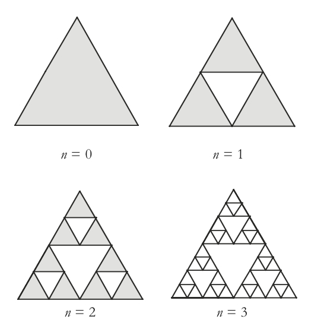
Appropriately shade the last triangle above to examine stage
number 3. Then complete the table.
Stage number
0
1
2
3
n
Number of shaded
triangles
Total perimeter of
shaded triangles
Total area of shaded
triangles
Thinking of his will, Mr. Maury wants to leave a portion
of his farm to each of his four children. This farm is a
triangular piece of land whose dimensions are $1000$,
$1200$, and $2000$ meters. However, Mr. Maury wants to
be as fair as possible and leave pieces of equal size and
shape to his children. Do you think that it is actually
possible to split Mr. Maury’s farm into four pieces of equal
size and shape? Thoroughly explain your answer.
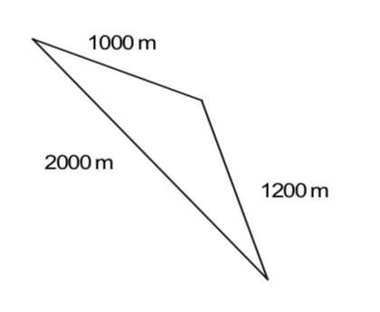
Is the result you found in Problem 44
true for any triangle? That is, is it always possible to
divide a triangle into four triangles of equal size and
shape? Explain.
Case SAS
Regarding triangles $PQR$ and $STW$ above, we have the following:
$m\angle P = {60^ \circ }$, $PQ = 2$, $PR = 3$,
$m\angle S = {60^ \circ }$, $ST = 4$, and $SW = 6$.
Are these two triangles similar? How could you justify your
answer?
For each statement below, draw a picture illustrating it.
Then decide whether or not this statement is true. For each
“Case” with which you disagree, give a counterexample showing
that it is false.
AA Case
If two angles of one triangle are congruent to two angles of
another triangle, then the two triangles are similar.
SSS Case
If the three sides of one triangle are proportional to the
three sides of another triangle, then the two triangles are
similar.
SAS Case
If the following conditions are met:
i) Two sides of one triangle are proportional to two sides of
another triangle. That is, the lengths of two sides of one
triangle are a constant times the lengths of two sides of the
other triangle.
ii) The included angles are
congruent. That is, the angle formed in one of the triangles by
the two sides that are proportional to two sides of the other
triangle is congruent to the corresponding angle in the other
triangle.
Then the two triangles are
similar.
SSA Case
If two sides of one triangle are proportional to two sides of
another triangle and the angle opposite one of those sides of
the first triangle is congruent to the corresponding angle
opposite one of those sides of the second triangle, then the
two triangles are similar.
A certain crop of black-eyed peas has been genetically
altered such that each pea is flat and perfectly circular,
and its “eye” runs in a straight line through the center of
the pea. The $PeaEye$ function takes any pea and divides
its circumference by the length of its eye. If pea #1 is
twice the size (total area) of pea #2, then which is bigger:
$PeaEye\left( {pea\# 1} \right)$ or $PeaEye\left(
{pea\# 2} \right)$?
Exploring in Depth
In a triangle, a segment drawn from a vertex of a triangle
perpendicular to its opposite side, or to the extension of its
opposite side, is called an altitude to this side of the
triangle.
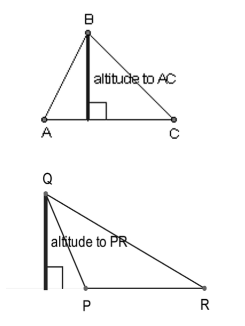
If in a right triangle the altitude to the hypotenuse is
drawn, the hypotenuse is divided into two segments. The lengths
of these segments and the length of the altitude to the
hypotenuse are related. This relationship has already been
revealed in Problem 39. In the following problems, we will try
to make this relationship more explicit.
In the right $\triangle ABC$ below, draw the
altitude $\overline {CD} $ to the hypotenuse. Then:
Mark in all the angles that turn
out to be congruent.
Name all pairs of similar
triangles. Justify your answer.
Very likely, you have been using the Pythagorean Theorem for
quite some time now. However, have you ever created a formal
proof of this theorem? You might not have known enough until
now.
Regarding a right triangle as the one below, answer the
following questions.
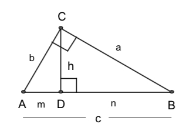
Write an equation relating, $h$, the
length of the altitude to the hypotenuse, with $m$ and $n$, the two
lengths into which this altitude divides the hypontenuse.
Hint: Consider triangles $\triangle ADC$
and $\triangle CBD$.
Write an equation relating the legs,
the hypotenuse, and the length
of the altitude to the hypotenuse.
In other words, write an equation
involving a, b, c, and h in the above triangle.
Hint: Consider triangles $\triangle ABC$ and $\triangle ACD$
$\overline {AD} $ is called the
projection of leg $\overline {AC} $ onto the hypotenuse
$\overline {AB} $. Also, $\overline {DB} $ is the projection
of leg $\overline {CB} $ onto the hypotenuse $\overline {AB} $. How is each leg related to the hypotenuse and its projection
onto the hypotenuse? In other words, write an equation relating
$a$, $c$, and $n$ in the triangle shown above. Then write an
equation, relating $b$, $c$, and $m$.
Hint: Consider $\triangle ABC$ and $\triangle CBD$, and
$\triangle ABC$ and $\triangle ACD$.
Use Part c above to prove the
Pythagorean Theorem. That is,
prove that ${a^2} + {b^2} = {c^2}$.
In the figure below, $\triangle ABC$ is a right triangle and $\overline
{CD} $ is the altitude to the hypotenuse. As shown in the
figure, the lengths of the projections of the legs $b$ and $a$
over the hypotenuse are, respectively, $m = 3$ and $n =
9$. Find $h$.
In the figure below, $\triangle ABC$ is a right triangle and $\overline
{CD} $ is the altitude to the hypotenuse. As shown in the
figure, the lengths of the projections of the legs $b$ and $a$
onto the hypotenuse are, respectively, $m = 4$ and $n$. As
usual, $c$ is the length of the hypotenuse $\overline {AB} $.
Find AB.
Find $h$.
Let us recall Andrew’s kite problem (#40).
Can you use the ideas developed in the problems of this
section to find out how much paper of each color Andrew needs
to cover his kite?
Lesson 2:
Intro To Trigonometry
Introduction
The escalator at the Wheaton metro station in Silver Spring,
Maryland, is the longest escalator in the Western Hemisphere.
If you ride it you will travel a diagonal distance of 508 feet,
which will take two minutes and forty-five seconds. You’re
about to build a bigger one – your goal is to make an escalator
with a diagonal distance of 520 feet. Before you can start,
though, you need to do some planning. You need to figure out
how much space along the ground your escalator will take so
that you can prepare the foundation. Standard escalator
construction rules require that:
the steps each be 1.2 feet long
.
The measure of the angle between the ground and the
diagonal path of the escalator must be no more than 30°
You start to build your escalator and measure a diagonal
distance of 1.3856 feet per step. What is the horizontal
distance, along the ground, you’ll need to clear in order to
build your escalator with a diagonal distance of 520
feet?
Development
Your solution to the escalator problem probably involved
ratios or scale factors in some way. Here’s one way of thinking
about the problem:
If you haven’t already, explain how you know that
$\frac{1.2}{1.3856} = \frac{\textrm{the required horizontal distance}}{520}$.
Use a similar method to find the height of the Wheaton
escalator.
Imagine a large right triangle $ABC$ with the right angle at
$A$ and angle $C = {30^ \circ }$. Based on your work in
problems 1-3:
What would you expect the ratio of
$AC$ to $BC$ to be? Why?
How about the ratio of $AB$ to
$BC$?
Go ahead and check your thinking by
using a protractor and ruler to accurately draw such a
triangle, and measure the sides. Convince yourself that these
ratios are the same no matter how large or small the right
triangle is, provided the measure of angle $C$ remains
30°.
As problem 4 emphasizes, certain ratios will always stay
constant in a right triangle with an angle measuring 30°. In
the escalator example, the ratio of the vertical distance to
the diagonal distance is called the sine of 30°. The ratio of
the horizontal distance to the diagonal distance is called the
cosine of 30°.
A third ratio is called the tangent ratio. In the escalator
example, this is the ratio of the vertical distance to the
horizontal distance.
If you asked your calculator to tell you the sine of 30°
what do you suppose it would give you? How about the cosine
of 30°? Tangent of 30°?
If you think of the escalator as a triangle with a 30° angle and a 90° angle, you can label the sides as
follows:
There are two sides that form the 30° angle. One is of
course the hypotenuse; the other is called the side adjacent to
the 30° angle. The vertical side of the triangle is called
the side opposite to the 30° angle, since it is all the way
across the triangle from the angle.
For each of the following, use a protractor to draw a
RIGHT triangle with the angle given. Then use a ruler to
measure the lengths and calculate the sine, cosine, and
tangent of each angle.
25°
63°
42°
For each part in the previous problem, use the SIN, COS,
and TAN buttons on your calculator to see how close your
estimates were.
Here’s the picture in general. We’re using $\theta$ (“theta”) to
stand for any angle, just like we can use $x$ to stand for any
number.
If $\theta$ is an angle in a right triangle, but not the right
angle, then here’s how we define the three trigonometric
ratios:
Using the two triangles below, find the sine, cosine, and
tangent of a 70° angle, a 20° angle, a 35° angle, and a 55°
angle.
Did you notice any repeated answers in your calculations
above?
Make a conjecture based on your
findings.
Try out your conjecture on a
triangle that you create.
Can you explain why this is going
on?
In the similar triangles lesson, and also in the escalator
problem, you were able to find missing lengths in certain
triangles because you had a second, similar triangle that
allowed you to find the scale factor. One reason that sine,
cosine, and tangent ratios are so important is that they help
you find lengths in triangles even when you don’t have a second
triangle to help you get the scale factor.
Here is a problem that allows you to “solve a triangle”
using only trigonometry.
Use this triangle to write an
expression for the tangent of
35 degrees. Your expression will, of course, contain the
letter $x$.
Using the equation “$\tan {35^ \circ
} = ...$”, find $x$. (You should know the value of $\tan
35^\circ $ from a previous problem)
Find the length of the hypotenuse of
the triangle.
In the previous problem, you were lucky that you already
knew the tangent of 35°. You are not always so lucky.
However, your calculator can help you out.
Press the MODE button on your calculator and make sure
“degree” is selected. Then type “tan(35)”. The number on your
screen should look familiar.
Find both of the missing sides in the following
triangle:
Often, trigonometry is used to find lengths of triangles in
the “real world” that are too difficult to measure
directly.
You’d like to know how tall a flagpole is, but you can’t
reach the top to measure it. So instead you use your tape
measure to measure 50 ft along the ground. Standing 50 ft
away from the flagpole, you can see the top of the flagpole
by looking up at a 22° angle. How tall is the flagpole?
In the previous problem, you might have ignored your
height. Say your eyes are at a level of 5 feet 6 inches above
the ground. Taking this into account, figure out how tall the
flagpole really is.
Practice
Find the length $x$ in each triangle.
Stephen can see the head of the Loch Ness Monster if he
looks up at an angle of 35°. He’s standing on the level floor
of a shallow lake, and he’s six feet tall. If it is 20 yards
along the ground from where he’s standing to where the Loch
Ness Monster is standing, how tall is “Nessie”?
Think about the location of Stephen's eyes. Is your answer to
the previous question actually a little bit too big, or a
little bit too small?
A 20-ft ladder is placed against a wall at an angle of
72
degrees with the ground.
How far from the base of the wall
is the ladder?
How high does the ladder reach on
the wall?
Problems
Your fifth-story apartment window looks out over a
courtyard 50 feet long. To see your friend in the
eighth-story window across the courtyard, you need to tilt
your head up at a 31° angle. How far apart are the floors
positioned in your apartment building? (Assume they’re spaced
evenly).
Say that, for some angle $\theta$, $\sin \theta =
\frac{5}{8}$. Mark’s triangle has a 90° angle and an angle
of $\theta$. The side opposite $\theta$ is 45 cm long. How long is the
hypotenuse of Mark’s triangle?
The sine of 25 degrees is about .4226. What angle has a
cosine of about .4226?
John looks at a building whose base is 100 ft. away from
where he is standing. He sees a friend leaning out of a
window at an angle of elevation of 30 degrees. His friend
yells to him that the people in the building are part of a
“flash mob” (see http://en.wikipedia.org/wiki/Flash_mob), and
that a mutual friend will be appearing at a window that is
twice as high up. So John looks at the window at an angle of
elevation of 60 degrees, but their mutual friend never
appears. Why?
In problems 23-27, geometric tinkering will prove very
helpful.
Find $x$.
Find $x$.
Find $x$.
Your calculator gives you approximate answers when you ask
it to tell you the sine, cosine, or
tangent of an angle. (See http://www.mathsisfun.com/irrational-numbers.html
for more information and a juicy, though probably apocryphal,
tidbit.) Sometimes you would rather know the answer
exactly. Some geometry can help you do this.
Below are two triangles. The first one is an
equilateral triangle. The second is an isosceles
right triangle.
Find all the sides and angles in the figures on the previous page, including
the height of the equilateral triangle. Do not use a
calculator, and do not convert your answers to decimals.
Here are two more triangles.
Again, the first is equilateral and the second is an isosceles
right triangle.
Now find all the sides and angles. You’ll have to give
some of your answers in terms of $x$.
Your answer to the previous exercise turns out to be
tremendously useful. For instance, let’s say that you have a
triangle that you know to have angles of 30, 60, and 90
degrees. We’ll call this a 30-60-90 triangle. Normally, you’d
need to know two sides of a right triangle in order to figure
out the third side of a triangle. But the result in the
previous exercise can help you find both missing sides.
For example, say you have a 30-60-90 triangle with its
shortest side of length 3. Find the lengths of the other two
sides.
Suppose you have a 30-60-90 triangle and the hypotenuse
has length 5. What are the lengths of the other two
sides?
Find the lengths of the legs in a 45-45-90 triangle if the
hypotenuse has length $7\sqrt 2 $.
If you haven’t already, make a good sketch in your
notebook of a 30-60-90 triangle with shortest side $x$, and
label its other sides in terms of $x$. Then do the same thing
for a 45-45-90 triangle.
Copy the following chart into your
notebook and use the diagrams you drew in problem 31 to help
find exact values
for the sine, cosine, and tangent of the
following angles.
$\theta$
Sine of $\theta$
Cosine of $\theta$
Tangent of $\theta$
30°
45°
60°
Sally spies Bigfoot, who is a bit too close for comfort.
With her trusty protractor in hand, she notices that, if she
looks up at a 60-degree angle, she can just see the bald spot
on the top of his head. When Bigfoot sees her protractor, he
shies and runs away. Sally then measures along the ground to
the spot where he was standing, and finds that he was 10
meters away. Five-foot-tall Sally can calculate exactly how
tall Bigfoot is. Can you?
Now that Sally knows how tall Bigfoot is, she decides to
spy on him from a distance. If she can now see the top of his
head by looking up at a 30° angle, exactly how far away is
she from Bigfoot?
Kenya computes the sine of 45 degrees from her isosceles
right triangle and gets $\frac{1}{{\sqrt 2 }}$, while
Victoria computes the sine of 45 degrees from her isosceles
right triangle and gets instead $\frac{{\sqrt 2 }}{2}$.
Are these answers actually the same answer, or not?
Explain.
Are there other right triangles besides 30°-60°-90°
triangles for which one of the sides is half the length of
the hypotenuse?
Recall that an altitude of a triangle is a
line segment drawn from the vertex
of a triangle at a right angle to the line containing the
opposite side.
The three altitudes of an
equilateral
triangle all have length 12 cm. How long are its sides?
An isosceles triangle has two $65^\circ $ angles. The
altitudes drawn from those angles are 12 cm. What are the
lengths of the three sides of the triangle? Answer to the
nearest tenth of a millimeter.
Suppose you have a rectangle with dimensions a and b. The
Oblongness function is defined by: ${\rm{Oblongness}}(a,b) =
\frac{{{\rm{max}}(a,{\rm{ }}b)}}{{{\rm{min}}(a,b)}}$.
Draw rectangles with the following
oblongnesses: 3, 10, 1.618.
For which pairs of values of a and
b is ${\rm{Oblongness}}(a,b)$ as small as possible?
Wouldn’t it be easier to just
define ${\rm{Oblongness}}(a,b)$ simply as $\frac{a}{b}$? Why
is the given definition better?
Cody has a rectangle, in which he
has drawn one diagonal. He finds that the angle between the
diagonal and the long side of the rectangle is 12 degrees.
What is the oblongness of Cody’s rectangle?
This diagram shows a rectangle that has been formed by
bordering an isosceles right triangle with three other
right
triangles, one of which has a 60-degree angle as shown.
Given that the length marked is 1
unit long, find as many lengths and angles in the picture as
you can. (Give answers in exact form.)
Use this diagram to find the exact
value of the sine of a 75-degree angle.
Susan and Emily are both standing on an east-west
sidewalk, looking at the top of a 20-foot building. Susan is
standing due south of the building, and has to look up at an
angle of 50° to see it. Emily, who is standing to Susan’s
right, has to look up at an angle of 35° to see the building.
How far apart are Susan and Emily?
Don’t use a calculator for this problem.
Simplify: $- (7x)(x - 5)$
Simplify: $3(x-1) - 2(x-4)$
Solve the inequality $\left| {x -
5} \right| > 7$.
Factor: ${x^2} - 9x + 20$
Solve for $x$: $\frac{2}{x} - 5 =
4$
In the diagram below, find $x$ and $y$.
The following questions are related to a famous puzzle
called “Buffon’s needle,” which you may want to look up if
you
are interested.
You’re throwing a tiddlywink with a
4 cm radius onto a floor with square tiles measuring 12 cm on
a side. What’s the probability that the tiddlywink will make
it onto the floor without landing on a crack?
Now you’re playing a different
version of the game, where you throw a needle between evenly
spaced stripes on the floor. Your needle is 2 inches long,
and the stripes are also 2 inches apart. Assuming that the
needle will land at an angle of 72 degrees to the stripes,
what’s the probability that it will land without overlapping
any of the stripes?
Here are some questions about an
“extreme value” of the sine.
Ask your calculator to tell you the
sine of an 80° angle. Then ask for the sine of an 89° angle.
Does this suggest a value for the sine of a 90° angle? Have
your calculator confirm your guess.
Using a protractor, draw a right
triangle with an 80° angle. Then measure the hypotenuse and
the side opposite the 80° angle. How do they compare? How do
you think those two sides would compare in a right triangle
with an 89° angle?
Have a conversation with a
classmate (or friend, guardian, spiritual advisor) about how
someone might have decided what the sine of a 90° angle
should be. Remember that our definition of sine as
$\frac{{{\rm{opposite}}}}{{{\rm{hypotenuse}}}}$ in a right
triangle won’t quite work.
A rhombus has four 6-inch sides and two 120° angles. Two
altitudes are drawn in from one of the 120° angles. Find
the
area of each of the three pieces of the rhombus.
A right triangle has a 24 cm perimeter,
and its hypotenuse is twice as long as its shorter leg. Find
the lengths of all three sides of this triangle.
A triangle has a 60-degree angle and a 45-degree angle,
and the side opposite the 45-degree angle is 240 mm long. To
the nearest mm, how long is the side opposite the 60-degree
angle?
A line of positive slope is drawn so that it makes a 60
degree angle with the x-axis. What is the slope of this
line?
Play the “Buffon’s needle” game: take a needle and draw
parallel lines on a sheet of paper, spaced the needle’s
length apart. Toss the needle so that it lands on the paper,
and record whether the needle crosses a line or not. Pool
your data with others who have played the game, and use the
data to compute the probability that a needle thrown on the
paper will cross a line. Once you have the probability, try
dividing by two and then taking the reciprocal of your
answer. This process should result in something close to a
number with which you’re familiar.
Pick an angle, any angle. Use your calculator to find its
sine and cosine. Now square each of these numbers and add
them together. Try it again with another angle. Notice
anything? Write down your conjecture in as concise a form as
you can.
Let’s try to prove your conjecture in
Problem 51. Draw a right triangle $ABC$, with the right angle
at $C$, and use $a$, $b$ and $c$ to represent the lengths of the
sides opposite angles $A$, $B$, and $C$ respectively. Write ratios
for $\sin A$ and $\cos A$, and with the help of the
Pythagorean Theorem, prove your conjecture.
Lesson 3:
Trig And Shapes
Introduction
So far, the trigonometry that you’ve learned applies
specifically to right triangles. Even with shapes you see
around you that don’t look like right triangles, with a little
creativity you can still analyze these shapes using right
triangles.
An “octastar” is a perfectly regular eight-pointed star.
Find two different ways to split up the octastar into
right triangles.
Here’s a regular pentagon with each side measuring 2
inches.
Find the measure of each angle of the
pentagon by first drawing a circle around the pentagon. (You
might want to use the center of the circle.)
Let’s split this pentagon into six
right triangles. (You can assume that the lines that look
vertical and horizontal are vertical and horizontal.) Fill in
all the angles that you can figure out in the new diagram.
Now that you have all the angles,
what more do you need to find in order to calculate the area of
the pentagon? (Saying what you need to find is enough… you
don’t need to actually calculate the area.)
Development
In the diagrams so far, every drawing has been split up by
turning it into a collection of right triangles pieced together
– in other words, you add up the triangles to get the picture
you want. Here’s a slightly different way to use that strategy.
Suppose you’re investigating the following triangle:
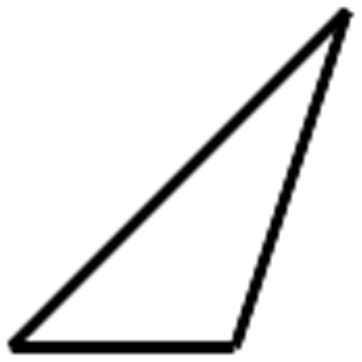
You could split it into two right triangles by adding the
following line:
But suppose for some reason you didn’t want to split up the
long side of the triangle. Instead, you might notice that if
you add a small right triangle on to your diagram, you get a
big right triangle:
One strategy to think about when you visualize a problem is
that you can alter the diagram to see it in a new way. Finding
a new way to see a picture, or figuring out an interesting way
to split a diagram into pieces, can give you insight into the
problem.
In the diagram below a circle is fitted exactly into a
square. The center of the circle is O and the length of
diameter AB is 3.5 cm. What is the area of the square?
Find the area of this shape:
Split each of these three identical triangles into two
right triangles, each in a different way.
The line segments you used to split the triangles in
problem 5 are called altitudes.
Why do you think they are so named?
Write a clear definition of an altitude.
Draw altitudes for the three
identical triangles below, each
in a different way.
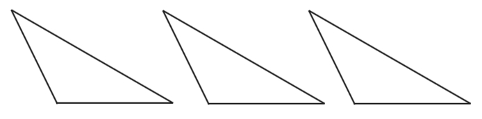
For the rest of this lesson, your numerical answers should
either be exact or have 2-decimal place accuracy, unless you
are asked to estimate an answer.
Use trigonometry to find the lengths of all the sides of
the bold triangle.
Use trigonometry to find the lengths of all the sides of
the triangle.
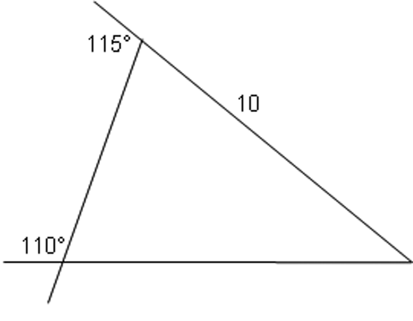
Use trigonometry to find the lengths of all the sides of
the triangle.
Inverse Trigonometry
So far, given the right information, you have been able to
find the length of sides of a triangle, and might well wonder
if there might be a way to find the angles when the appropriate
information has been given. For example, could you find the
angle at the top of the right triangle below? You could take a
guess, check your result, and refine your guess.
Make a guess. Think about how you could test your guess
for accuracy, given what you know about sines (or cosines).
Test it and adjust your guess until you get the correct
answer to the nearest degree.
There are ways to figure out the trigonometry of every angle
exactly, but when you type “sin 67”, for example, into your
calculator, it is basically looking the answer up on a table:
sin 67° is about .9205.
Now suppose you know that an angle has a sine of .9205, but
you don’t remember the degree measure of the angle. You can try
to figure out the angle, as you did in problem 10 above, using
reasoning. Or, you can use your calculator to look at the sine
table, backwards – this is like asking “The sine of what angle
would give me .9205?”
To do this, first make sure your calculator is set in degree
mode. Then, type
“$\sin^{-1}.9205$” into your calculator. This asks your calculator to give you an
angle whose sine is .9205. You will get an answer of
about 66.999°. (Notice that the answer we got is a tiny bit
different from the angle we started with – this is because
.9205 is rounded.) Your calculator has “$\cos^{-1}$” and “$\tan^{-1}$”
buttons as well.
Practice
In this right triangle, what is the
sine of angle A? Use your calculator (inverse trig) to find
A.
What is the tangent of angle A? Use
inverse trig with this number to find angle A. (Your answer
should be the same as that of part a!)
Find the measure of angle $A$ in the picture below.
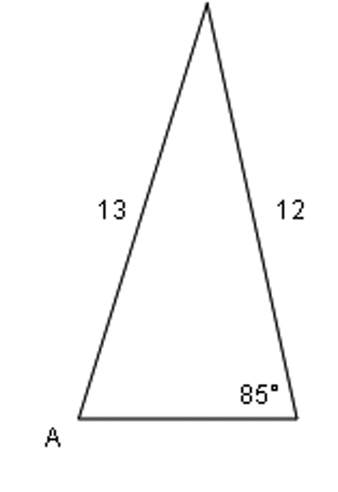
Find $x$ in each problem.
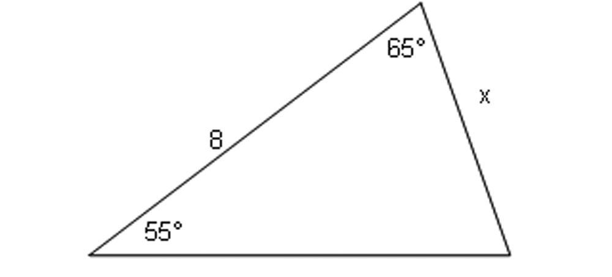
For the picture below, decide if each statement is true or
false. If you think a statement is false, say why.
${p^2} + {q^2} = {r^2}$
$\sin {w^{\rm{o}}} =
\frac{r}{s}$
$\sin {y^{\rm{o}}} =
\frac{r}{p}$
$\tan {x^{\rm{o}}} =
\frac{r}{p}$
$r^2 + t^2 = s^2$
Solve for $x$ in each equation.
$\sin x = .57$
$1.3 = \tan x$
$6\cos x = 5$
$\frac{\sin{x}}{6}=.12$
$16 = \frac{{10}}{{\tan x}}$
Problems
Angles of Descent and Elevation
In real-world problems, angles are often measured relative to the
ground, or to the horizontal.
In this diagram, the plane is taking off at an angle of elevation of
15°.
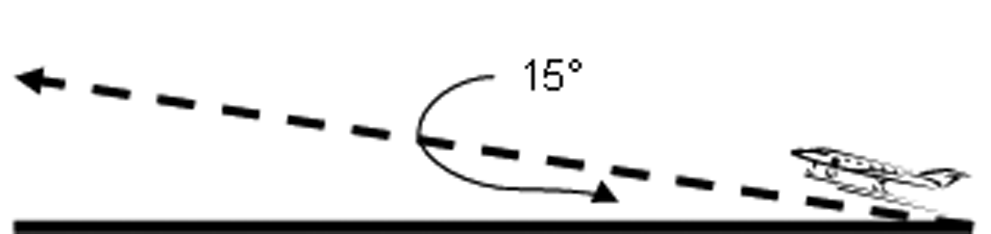
In this diagram, the plane is landing with an angle of
descent of 25°. Another name for this angle is the angle of depression.
The descending plane in the picture above is 100m above
the ground. The angle of descent is 25° as shown. How far in
the air does the plane fly from where it starts in the
picture to where it lands?
Two trees are leaning on each other. The tree on the left
is 11.5m long, at an angle of elevation of 26°. The tree on
the right has an angle of elevation of 11°. Find the length
of the second tree.
A bird is sitting on top of a pole, looking at a bug on
the ground. The bug is 8 ft from the base of the pole, and
the bird’s line of sight down to the bug has an angle of
depression of 55°. Draw a diagram to represent the situation,
and determine the height of the pole.
A plane takes off from Chicago O’Hare Airport, flying up
at an angle of elevation of 2°, for 410 miles. Then it tilts
down and starts to fly directly towards BWI Airport, at an
angle of descent of 3°.
Draw a picture. How far does the
plane fly on the downward part of its path?
How far is BWI from O’Hare (along
the ground)?
In problems 20 through 22, let’s define angle of the
sun to mean the angle between the sun’s light rays and the ground.
(Note that since the sun is extremely far away, all the light rays are
essentially parallel). So, around noon, the angle of the sun is close to
90° and you have a very short shadow:
Late in the afternoon, on the other hand, the angle of the
sun is much smaller, and you have a longer shadow:
Just before noon, the angle of the sun
is 89°.
How long is the shadow of a 40 ft
tall house?
How tall is a building that has a
25 ft shadow?
At 5pm, a 100-foot building has a 40 ft shadow.
Estimate, without using your
calculator, the angle of the sun.
Now calculate the angle of the
sun.
What’s the angle of the sun if everyone has a shadow
that’s 5 times their height?
Give the lengths of the 3 sides of a right triangle, where
exactly two of the sides are irrational and one of the angles
has a sine of $\frac{1}{2}$.
A dartboard is shaped like a regular hexagon with 10-inch
sides. Its vertices are (in this order) A,B,C,D,E,F. You get
a point if you hit the target region, rectangle ACDF. What
are your chances of getting a point?
A plane is landing at BWI airport. You start observing the
plane when it’s directly above Timonium, which is 15 miles
away from the airport. At this time the plane is .55 miles
above the ground. It’s flying at an angle of descent of 1°,
until it’s above Druid Hill Park, which is halfway between
Timonium and BWI. Then the plane changes its angle of descent
so that it’s heading directly towards the airport. Find the
second angle of descent.
You are kicking a ball off the ground at a wall. You win a
point if the ball hits the wall between 4 and 5 feet off the
ground. If you’re standing 10 feet from the wall, what’s the
range of angles you could kick the ball at, to get the
point?
You fold a piece of wire in half, and stand it up on the
table on its two ends. The angle of the fold is 48°, and the
two ends are 6 inches apart. How long was the wire? (Draw a
picture).
Find the missing side length in this
triangle.
Your house is 10 miles west of Baltimore, and your
friend’s house is 11 miles north-west of Baltimore.
Estimate, without using your
calculator, the distance between the two houses. (Hint:
what’s the angle between west and north-west?)
How far apart are the two
houses?
Starting at your front door, you walk 25 feet forward,
then make a slight, 10° turn to the right, and walk 5 more
feet. Draw a picture, and find how far you now are from your
front door.
Two ants on the ground are 15 feet apart. They are looking
up at a balloon hovering up in the air between them. If the
first ant looks up at the balloon, the angle of elevation of
the ant’s line of sight is 84°. For the second ant, it’s 52°.
Draw a picture, and then find the distance of the balloon
from each of the two ants.
For the next few problems – visualize - find a new way to
see a picture, or figure out an interesting way to split a
diagram into pieces, giving you more insight into the
problem.
Find the area of this shape:
This letter Z, composed of two rectangles and a
parallelogram, is symmetrical (the top part is the same as
the bottom part). Find all lengths and angles in the
picture.
Find X.
This is an equilateral triangle of side length 2 inches.
Find a way to split up the triangle so that you can find its
area.
This is a regular hexagon of side length 2 inches. Find a
way to split up the picture so that you can find its area.
(The result in problem 35 would be useful here.)
Back to our regular pentagon of side length 2 inches.
What’s its area?
What’s its height?
Two cars start next to each other. The red car drives 8
miles west, and the black car drives 13 miles north-east. It
might be helpful to make this diagram on a grid.
Draw the paths of the two cars.
What’s the angle between them?
What’s the distance between the two
cars, after they’re done driving?
You are standing near the edge of a cliff (at the top).
Your feet are 4.5 feet away from the edge. If you look at the
edge of the cliff, your line of sight is at an angle of
depression of 53°.
Estimate your height (Pretend your
eyes are at the top of your head).
Now determine your height using
trigonometry.
In the same line of sight as the
edge of the cliff, you see the bottom of a cactus. If the
cliff is 95 feet tall, how far away from the base of the
cliff is the cactus?
You have a four-sided shape with side lengths 10, 4, 10,
and 4 (in inches), and with hinges at all the corners – you
can bend it like this:
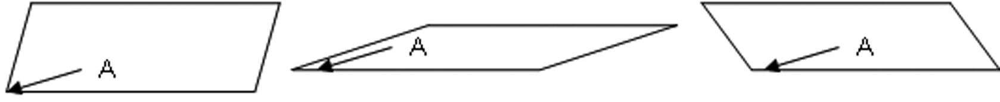
Let A be the angle indicated
in the picture above.a. What kind of quadrilateral is always
formed?
What kind of quadrilateral is always
formed?
If A=71°, find the area of the
quadrilateral.
If A=100°, find the area of the
quadrilateral.
What angle A would make the shape
have the biggest area? Explain your answer
Line $n$ is described by $y = 2x + 3$. Point $P$ has
coordinates $(4,7)$. Determine the measure of the angle
formed by line $n$ and the line containing point $P$ and the
$y$-intercept of line $n$.
Don’t use a calculator for this problem.
Divide: $8\frac{2}{3}\div 4\frac{1}{3}$
Simplify: $4 - 2{{( -
1)}^5 - {{( - 2)}^3}} $
Find an equation for the line that
goes through the points $( - 10,9)$ and $(5,3)$.
For which values of $x$ does
$\frac{{x + 1}}{{x + 2}} = \frac{{x + 2}}{{x + 4}}$?
Evaluate the expression $\frac{{ -
\left| x \right|}}{{\left| { - x} \right|}}$ if $x = 3$, and
then if $x = - 2$.
Can you find a value of $x$ that does not fit the pattern you
see?
Find the measure of the angle formed by a diagonal of a
cube and a diagonal of one of the faces of the cube.
A piece of candy looks like a regular hexagon with two
isosceles triangles. The piece of candy is 1 inch tall (the
top and bottom of the hexagon line up with the top and bottom
points of the triangle).
Find all the angles in the
picture.
Tinker with the diagram as necessary
so that you can find all the lengths in the picture.
Find the exact area of the candy.
This is a perfect star (everything is
symmetrical).
Find all the angles in the
picture.
Find all the lengths in the
picture.
Find the area of the star.
You throw a tennis ball from a height of 5.5 ft off the
ground, and it makes an angle of 35° with the ground when it
hits and when it bounces back up. After bouncing up it hits a
wall. You are standing 26 feet away from the base of the
wall.
How far away from your feet did the
tennis ball bounce?
How high up on the wall did the
tennis ball hit?
How far did the tennis ball
travel?
A ladder is propped against a wall. The top of the ladder
is 19 feet above ground, and the ladder makes an angle of 75°
with the ground.
Estimate, without using your
calculator, the length of the ladder.
How long is the ladder?
The ladder slides 4 feet down the
wall. How far away from the wall
is the base of the ladder, after the ladder’s slide?
You have a 20 foot ladder propped against a wall. It makes
an angle of 55 degrees with the floor. Then it slides down a
little bit. After the slide it makes an angle of 25 degrees
with the floor.
How far along the wall did it
slide?
How far along the ground did it
slide?
Jill is 5.7 feet tall, and Elizabeth is shorter. They
stand facing each other. Jill looks down at Elizabeth’s feet,
and her line of sight has an angle of depression of 76
degrees. (You can assume people’s eyes are at the top of
their heads).
Draw a diagram of the situation
with all the information filled in. How far apart are they
standing?
When Elizabeth looks up to the top
of Jill’s head, her line of sight is at an angle of elevation
of 19 degrees. How tall is Elizabeth?
Point $Q$ has coordinates $(5,2)$.
Find the image of $Q$ after it’s been
rotated 30 degrees counterclockwise around $(0,0)$.
Find the image of $Q$ after it’s been
rotated 30 degrees counterclockwise around $(1,3)$.
Exploring in Depth
Find the missing side length.
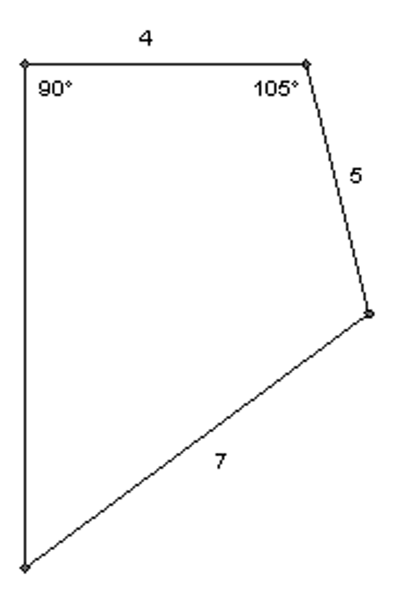
The perimeter of the triangle below is
100. Find the lengths of the sides. (Write equations!)
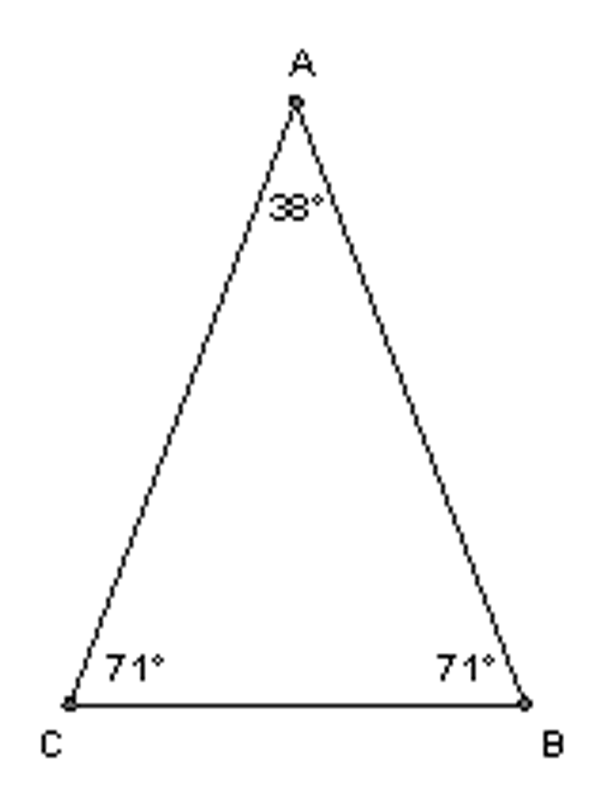
You leave your house, and walk 10 miles north. Then you
make a 30 degree turn to the right and walk 8 more miles.
Then you make a sharp turn to the right (more than a 90
degree turn) and walk some more, ending up exactly 15 miles
due east from your house. How long was this last piece of
your walk?
Find X. (You can assume that the two lines that appear to
be parallel are indeed parallel).
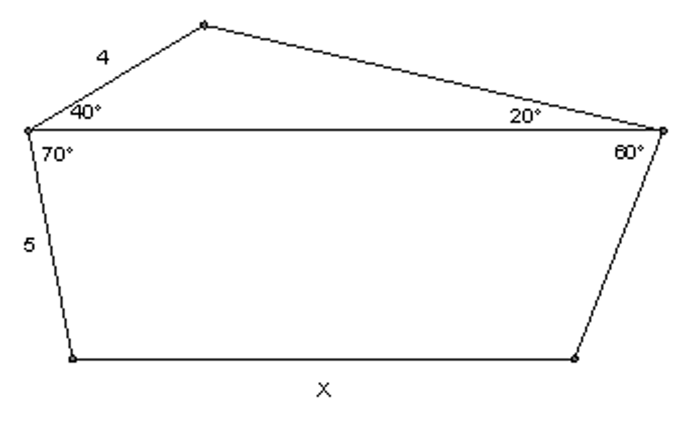
You are $X$ inches tall. One afternoon,
you notice that your shadow got 4.5 inches longer between
when you left school (when the angle of the sun was 72°) and
when you got home (when the angle of the sun was 68°).
In terms of $X$, how long is your
shadow when you leave school?
In terms of $X$, how long is your
shadow when you get home?
Find $X$.
A plane is flying east, with an angle of
descent of 10°. After flying 43 miles, it turns around
quickly and starts flying due west, at an angle of descent of
14°, for $X$ miles – pretty far past where it started. It ends
up exactly 18.5 miles away from where it started. Draw a
picture, and then find X.
The strangely pointy butterfly below is perfectly
symmetrical across the middle, and all the angles that look
like right angles are perfect right angles. He is 2 inches
across at the widest point, and 1.6 inches tall. Find all the
lengths in the picture.
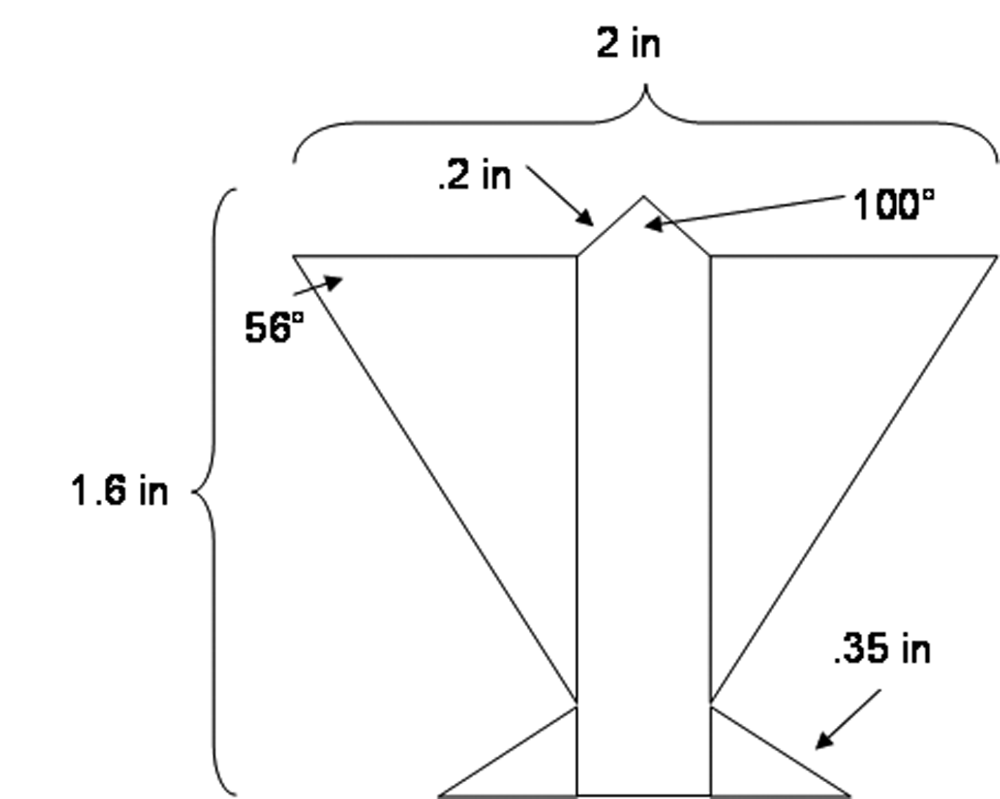
Let line $n$ and point $P$ be as in problem 41: $y = 2x + 3$ and $(4,7)$. Determine
the coordinates of the reflection of $P$
over line $n$.
You take a 40 degree sector of a circle (a sector is like
a slice of a cake), and cut off the triangle. What’s the area
of the piece that’s left, if the radius is 10?
At 5pm one day, you are attempting to measure the height
of a mountain. First, you observe that while you are 6 ft
tall, your shadow is only 2.5 feet long. Then, you observe
that the mountain’s shadow extends 120 ft past the foot of
the
mountain. Also, the angle at the base
of the mountain is 105°. How tall is
the mountain?
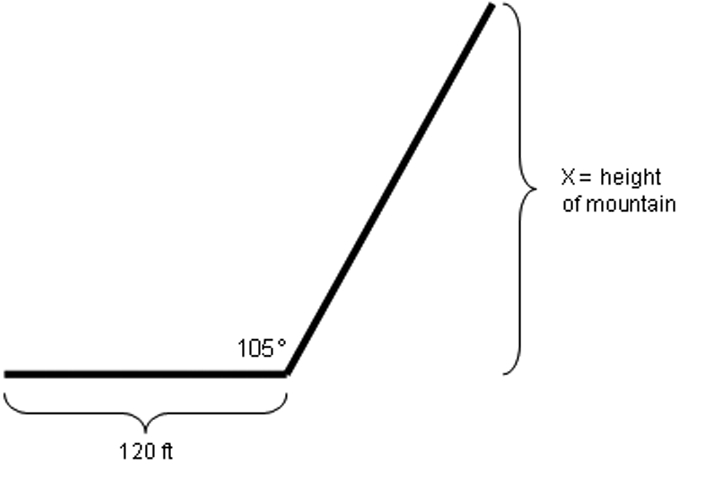
A plane is flying west at a constant
altitude. The pilot looks down and sees a lighthouse, and his
line of sight is at an angle of depression of 85° - the
lighthouse is almost directly below the plane. After the
plane flies 2500 more feet forward, the pilot looks down
again, this time at an angle of 89°, and sees a tower that he
knows to be 1000 feet west of the lighthouse. What is the
altitude of the plane? (Note – the picture is not to
scale!)
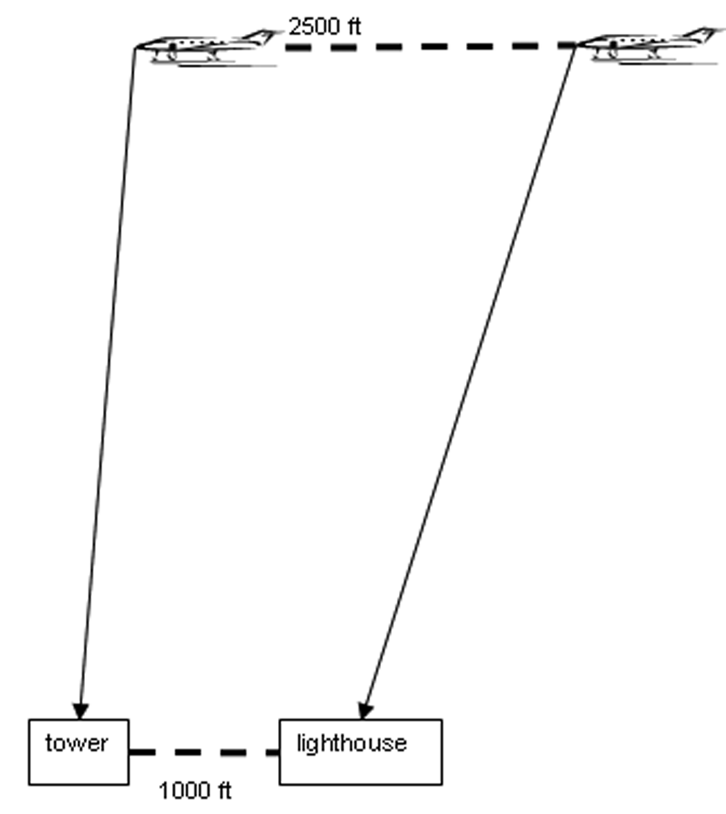
You see the top of a palm tree 14 yards away from you, at
an angle of elevation of 40 degrees. Behind the palm, you can
tell that there’s a short pine tree. The top of the pine is
20 yards away from you, at an angle of elevation of 10
degrees. How far apart are the tops of the two trees?
This circle has a radius of 8 inches, and the chord AB has
a length of 10 inches. Find the arc length of arc AB.
On a hiking trip, you start at point A and hike 5 miles in
a direction that’s 4° north of due east. Then, you turn your
path slightly, by 10° to your right, and walk until you are
directly east of point A where you started.
Draw a diagram of the situation.
How long do you have to hike in this new direction before you
make it back onto your intended trail?
How much shorter would your path
have been, if you just walked straight east instead of up and
then down?
Two motion-detector cameras sense an unidentified object
hovering in the air somewhere above them. The first motion
detector is on the ground, and it registers the object’s
location as 8.6 miles away, at an angle of elevation of 80°.
The second motion detector is on a tower 2 miles above the
ground, and registers the object’s location as 10 miles away
at an angle of elevation of 40°.
Draw a diagram of the situation, and find the distance
between the two motion detectors.
The area of a regular quadrilateral (a square) where each
side is length 1 will of course be ${1^2}$, which is an
integer. Do any of the other regular polygons with sides of
length 1 have integral area? How about rational area?
look for patternstinkerdescribevisualizerepresent symbolicallyprovecheck for plausibilitytake things apartconjecturechange or simplify the problemwork backwardsre-examine the problemchange representationscreate
look for patternstinkerdescribevisualizerepresent symbolicallyprovecheck for plausibilitytake things apartconjecturechange or simplify the problemwork backwardsre-examine the problemchange representationscreate
look for patternstinkerdescribevisualizerepresent symbolicallyprovecheck for plausibilitytake things apartconjecturechange or simplify the problemwork backwardsre-examine the problemchange representationscreate
look for patternstinkerdescribevisualizerepresent symbolicallyprovecheck for plausibilitytake things apartconjecturechange or simplify the problemwork backwardsre-examine the problemchange representationscreate
look for patternstinkerdescribevisualizerepresent symbolicallyprovecheck for plausibilitytake things apartconjecturechange or simplify the problemwork backwardsre-examine the problemchange representationscreate
look for patternstinkerdescribevisualizerepresent symbolicallyprovecheck for plausibilitytake things apartconjecturechange or simplify the problemwork backwardsre-examine the problemchange representationscreate
look for patternstinkerdescribevisualizerepresent symbolicallyprovecheck for plausibilitytake things apartconjecturechange or simplify the problemwork backwardsre-examine the problemchange representationscreate
look for patternstinkerdescribevisualizerepresent symbolicallyprovecheck for plausibilitytake things apartconjecturechange or simplify the problemwork backwardsre-examine the problemchange representationscreate
look for patternstinkerdescribevisualizerepresent symbolicallyprovecheck for plausibilitytake things apartconjecturechange or simplify the problemwork backwardsre-examine the problemchange representationscreate
look for patternstinkerdescribevisualizerepresent symbolicallyprovecheck for plausibilitytake things apartconjecturechange or simplify the problemwork backwardsre-examine the problemchange representationscreate
look for patternstinkerdescribevisualizerepresent symbolicallyprovecheck for plausibilitytake things apartconjecturechange or simplify the problemwork backwardsre-examine the problemchange representationscreate
look for patternstinkerdescribevisualizerepresent symbolicallyprovecheck for plausibilitytake things apartconjecturechange or simplify the problemwork backwardsre-examine the problemchange representationscreate
look for patternstinkerdescribevisualizerepresent symbolicallyprovecheck for plausibilitytake things apartconjecturechange or simplify the problemwork backwardsre-examine the problemchange representationscreate
look for patternstinkerdescribevisualizerepresent symbolicallyprovecheck for plausibilitytake things apartconjecturechange or simplify the problemwork backwardsre-examine the problemchange representationscreate
look for patternstinkerdescribevisualizerepresent symbolicallyprovecheck for plausibilitytake things apartconjecturechange or simplify the problemwork backwardsre-examine the problemchange representationscreate
look for patternstinkerdescribevisualizerepresent symbolicallyprovecheck for plausibilitytake things apartconjecturechange or simplify the problemwork backwardsre-examine the problemchange representationscreate
look for patternstinkerdescribevisualizerepresent symbolicallyprovecheck for plausibilitytake things apartconjecturechange or simplify the problemwork backwardsre-examine the problemchange representationscreate
look for patternstinkerdescribevisualizerepresent symbolicallyprovecheck for plausibilitytake things apartconjecturechange or simplify the problemwork backwardsre-examine the problemchange representationscreate
look for patternstinkerdescribevisualizerepresent symbolicallyprovecheck for plausibilitytake things apartconjecturechange or simplify the problemwork backwardsre-examine the problemchange representationscreate
look for patternstinkerdescribevisualizerepresent symbolicallyprovecheck for plausibilitytake things apartconjecturechange or simplify the problemwork backwardsre-examine the problemchange representationscreate
Habits
look for patternstinkerdescribevisualizerepresent symbolicallyprovecheck for plausibilitytake things apartconjecturechange or simplify the problemwork backwardsre-examine the problemchange representationscreate
look for patternstinkerdescribevisualizerepresent symbolicallyprovecheck for plausibilitytake things apartconjecturechange or simplify the problemwork backwardsre-examine the problemchange representationscreate
look for patternstinkerdescribevisualizerepresent symbolicallyprovecheck for plausibilitytake things apartconjecturechange or simplify the problemwork backwardsre-examine the problemchange representationscreate
look for patternstinkerdescribevisualizerepresent symbolicallyprovecheck for plausibilitytake things apartconjecturechange or simplify the problemwork backwardsre-examine the problemchange representationscreate
look for patternstinkerdescribevisualizerepresent symbolicallyprovecheck for plausibilitytake things apartconjecturechange or simplify the problemwork backwardsre-examine the problemchange representationscreate
look for patternstinkerdescribevisualizerepresent symbolicallyprovecheck for plausibilitytake things apartconjecturechange or simplify the problemwork backwardsre-examine the problemchange representationscreate
look for patternstinkerdescribevisualizerepresent symbolicallyprovecheck for plausibilitytake things apartconjecturechange or simplify the problemwork backwardsre-examine the problemchange representationscreate
look for patternstinkerdescribevisualizerepresent symbolicallyprovecheck for plausibilitytake things apartconjecturechange or simplify the problemwork backwardsre-examine the problemchange representationscreate
look for patternstinkerdescribevisualizerepresent symbolicallyprovecheck for plausibilitytake things apartconjecturechange or simplify the problemwork backwardsre-examine the problemchange representationscreate
look for patternstinkerdescribevisualizerepresent symbolicallyprovecheck for plausibilitytake things apartconjecturechange or simplify the problemwork backwardsre-examine the problemchange representationscreate
look for patternstinkerdescribevisualizerepresent symbolicallyprovecheck for plausibilitytake things apartconjecturechange or simplify the problemwork backwardsre-examine the problemchange representationscreate
look for patternstinkerdescribevisualizerepresent symbolicallyprovecheck for plausibilitytake things apartconjecturechange or simplify the problemwork backwardsre-examine the problemchange representationscreate
look for patternstinkerdescribevisualizerepresent symbolicallyprovecheck for plausibilitytake things apartconjecturechange or simplify the problemwork backwardsre-examine the problemchange representationscreate
look for patternstinkerdescribevisualizerepresent symbolicallyprovecheck for plausibilitytake things apartconjecturechange or simplify the problemwork backwardsre-examine the problemchange representationscreate
look for patternstinkerdescribevisualizerepresent symbolicallyprovecheck for plausibilitytake things apartconjecturechange or simplify the problemwork backwardsre-examine the problemchange representationscreate
look for patternstinkerdescribevisualizerepresent symbolicallyprovecheck for plausibilitytake things apartconjecturechange or simplify the problemwork backwardsre-examine the problemchange representationscreate
look for patternstinkerdescribevisualizerepresent symbolicallyprovecheck for plausibilitytake things apartconjecturechange or simplify the problemwork backwardsre-examine the problemchange representationscreate
look for patternstinkerdescribevisualizerepresent symbolicallyprovecheck for plausibilitytake things apartconjecturechange or simplify the problemwork backwardsre-examine the problemchange representationscreate
look for patternstinkerdescribevisualizerepresent symbolicallyprovecheck for plausibilitytake things apartconjecturechange or simplify the problemwork backwardsre-examine the problemchange representationscreate
look for patternstinkerdescribevisualizerepresent symbolicallyprovecheck for plausibilitytake things apartconjecturechange or simplify the problemwork backwardsre-examine the problemchange representationscreate
of Mind
geometric tinkering
When you have a diagram, it is sometimes helpful to Fill
in all the Information you Can, even if you think it has
nothing to do with the problem you have to solve. This is
another example of tinkering. Doing this will help you to see
patterns and to notice things about the diagram that you
might not have noticed otherwise. It is a wonderful thing to
do when you are stuck on a problem.
The radius of the smallest circle is one unit. What is
the ratio of
the area of the largest circle to the area of the smallest
circle?
In the problem on the previous page, rather than trying to figure out the
ratio of the two areas immediately, it makes more sense to
figure out some smaller, manageable thing about the figure,
and see where that leads us. A clear place to start is with
the smallest circle. Once we find the area of that circle, we
can then find the square that surrounds it. Can we then find
the area of the second largest circle? By looking at the
smallest parts, we can see the pattern which allows us to
solve the original problem.
In your previous experience with geometry, you probably
learned some basic facts about angles, lines, and triangles.
For instance, two angles that form a line add up to 180
degrees, and so do the three angles of a triangle. You may
also know that, in an isosceles triangle, the angles opposite
the sides that are the same length are also the same. These
facts will help you with many of the problems that
follow.
The two marked lengths are congruent. Find the measures
of all the angles in
the figure.
Find the measures of all the angles
in the figure.
The area of this hexagon is 60. Find the product of the
lengths of the segments AB and BC.
A smaller circle has radius 2 and a larger circle has
radius 3. $A$ and $D$ are points on the tops of these circles.
The circles are touching in the middle, as shown.
Find the distance from $A$ to $D$.
Given that the four marked lengths are congruent, find
$x$.
In the following diagram, $BC=5$, $AC=4$, and the circle $B$
has four times the area of circle $A$. Find the area of
circle $C$.
Find $x$.
Draw a square with vertices A, B, C, and D, in that
order. Then draw an equilateral triangle with vertices A,
B, and E, where E is a point outside the square. Connect
points E and C with a line segment. Find the measure of
angle ECB.
Repeat the previous problem, but this time place point E
inside the square. Again, find the measure of angle
ECB.
Find the measure of angle ABC.
Prove that the large triangle below is a right triangle.
It may help to label some angles $x$ and other angles $y$ (give
angles the same letter if you know they are the
same!)
Find $x$.
Find $x$.
Find $x$.
A rectangular solid always has 12 edges (count the edges of a tissue box), and 6 faces (count the 2D rectangles that form the tissue box.) Each face of a rectangular solid has two diagonals, formed by connecting opposite corners.
Find the dimensions of a rectangular solid where the 12 edges and the diagonals on all 6 faces are integers.
The triangle below is equilateral. Find the area of the
circle.
The triangle below is the famous “3-4-5” right triangle;
famous because it is one
of the simplest triangles that satisfies the Pythagorean
theorem: ${3^2} + {4^2} = {5^2}$.
As you can see, the 3-4-5 right triangle has been placed
in a rectangle. What is the height of the rectangle?
Three squares are lined up along the x-axis as shown,
and the points with coordinates (0,4) and (21, 12) are
labeled accordingly. Find AB.
Copyright mathleague.com.
Summary and Review
For each pair of triangles shown, say if they must be
similar, must not be similar, or if there is not sufficient
information to tell. If the triangles are similar, write the
similarity statement (with a “$\sim$"), paying attention to the
correct order of the letters.
In the figure below, AE is parallel
to CD. Why are the triangles similar?
Find all the missing side
lengths.
Below is an isosceles triangle with one of its sides
extended. If angle A is $x$ degrees, find the measure of angle
ABD in terms of $x$.
In triangle ABC, it is given that angle A is 59 degrees
and angle B is 53 degrees The altitude from B to line AC is
extended until it intersects the line through A that is
parallel to segment BC; they meet at K. Calculate the size of
angle AKB.
In the picture below, $BC||DE$ . Find $X$ and $Y$.
ABC is a right triangle. The altitude to its hypotenuse is
drawn, hitting the hypotenuse at point D. $AD = 9$ and $DC = 4.$
Find $x$, the length of the altitude.
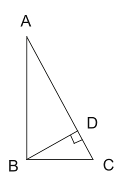
In the figure below,
$\angle ACD$ and $\angle BED$ are right angles. Name all the triangles in
the figure that are similar to each other, using correct similarity
notation.
In the figure below, $\overline {BE} \parallel \overline
{CD} $, and $\angle ABE$ and $\angle C$ are right angles.
Find each of the following.
AB
ED
Look carefully at the diagram below
before answering the following questions.
Name as many pairs of similar
triangles as you can. Use correct similarity notation.
If $EC = 5.6$ , $CD = 3$ , $GD =
1.48$, and $FH = 3.75$ , calculate the length of $\overline
{BF} $. You must show your work clearly.
What’s wrong with the picture drawn below?
Use the triangle below to determine the values of the
following expressions.
The exact length of the hypotenuse.
This means don’t approximate its length.
$\sin \theta $
$\cos \theta $
$\tan \theta $
$\sin \left( {{{90}^ \circ } - \theta
} \right)$
Use trigonometry to calculate the lengths of the unknown
sides of the right triangle given below. Show your work.
Recall that the convention for labeling sides and angles
of triangles is to put side $a$ opposite angle $A$, etc.
Find the missing information in each
triangle:
In triangle ABC, $\angle A =
90^\circ ,{\rm{ }}\angle B = 25^\circ ,$ and $a = 18$. Find $b$
and $c$.
In triangle XYZ, $\angle X =
90^\circ ,{\rm{ }}\angle {\rm{Y = 37}}^\circ {\rm{,}}$ and $z
= 25$. Find $x$ and $y$.
Why does your calculator give you an error when you try to
do $\sin^{-1}(2)$, but not when you do $\tan^{-1}(2)$?
The CN tower in Toronto is the highest tower in the world.
You are standing 100 m away from the base of a tower. You can
just see the top of the tower when you look up at a 79.7°
angle. How tall is the tower?
A student looks out of a second-story school window and
sees the top of the school flagpole by angling his line of
sight 22° above the horizontal. The student is 18 ft above
the ground and 50 ft from the flagpole. Find the height of
the flagpole.
Squidward is in a plane that is 160 miles north and 85
miles east of SpongeBob airport.
How far away is the airport?
What direction should the plane fly
to go directly to the airport? (Your answer should be very
specific and include an angle)
An observer in a lighthouse 350 feet above sea level
observes two ships approaching. The angle of depression to
the first ship is $4^\circ $, and to the second is $7^\circ
$. How far apart are the ships?
What is the perimeter and area of the figure below?
A triangle has sides of length $g$, $g$, and
$\frac{{7g}}{5}$ . Is it a right triangle? Explain.
$\triangle ABC$ is a right triangle with right angle B. A line segment is
drawn from angle B perpendicular to $\overline{AC}$. Where it intersects
this side mark the point D. Let $BC = 12$ and $DC=11.07692$. Find the area
of $\triangle ABC$. Show your work.
A plane flies 500 miles from Boise to Snazziville, then
changes direction at Snazziville and flies 840 miles to
Dubuque. (see the picture below).
What is the measure of the angle with
vertex Dubuque?
How far is it from Boise to
Dubuque?
If the plane always flies at 600
miles per hour, how much time was wasted going by way of
Snazziville instead of going directly to Dubuque?
Simon and Paula are 30 kilometers apart, and they each
spot a religious idol on fire in the distance (see the
picture below).
How far are Simon and Paula from the
fire?
What is the area of the triangle?
In parallelogram ABCD below, $BD = 12$ , $\angle A =
75^\circ $, and $\angle BDA = 45^\circ $ .
Find AB.
Find the area of the
parallelogram.
In the figure below, find x, y, z, AB and BC.
The altitude (or height) of an equilateral triangle is 6.
Find the triangle’s perimeter.
The perimeter of a regular octagon is 72.
What is the length of each
side?
What is the sum of its angles?
Find the area of the octagon.
A right triangle has a perimeter of 24, and its hypotenuse
is three times as long as its shorter leg. Find the lengths
of all three sides of the triangle.
When Snuffles looks up to the top of the Aquarium, he is
looking up at an angle of $68^\circ $. When he steps back
10 meters, now when he looks up to the top of the aquarium,
he is looking up at only $50^\circ $. Determine the height
of the aquarium, and the area of the triangle on the
left.
Tom Colicchio and Padma Lakshmi haven’t eaten in 5 days as
the food that has been cooked for them hasn’t been fancy
enough for them to deign to eat it. By this point, however,
they are both starving. As in the picture below, a hamburger
appears suddenly. Assuming Padma runs $1\frac{2}{3}$ times as
fast as Tom, who gets to the burger first?
In right triangle ACB (where C is the right angle):
If a = 12 and $\angle B = 71^\circ
$ , determine the rest of the angles and sides of the
triangle.
If, instead, c = 13 and b = 6,
determine the rest of the angles and sides of this other
triangle.
In the diagram below, find Z.
Socrates, the Ancient Greek philosopher, was known for
being a trickster. One day, Socrates claimed to have a
triangle whose lengths were 5, 8, and 10. He also said that
two of the angles in the triangle were ${50^ \circ }$ and
${27^ \circ }$ .
Andrew decides to measure the height of a tree by using an
idea he learned in class. He takes two poles—one 10 feet long
and the other 14 feet long—and walks up to a very tall tree.
He places the 14-ft tall pole to the side, walks with the
10-ft pole straight out 36 feet from the tree and plants the
pole so that it is parallel to the tree. He then walks along
the same line father away from the tree until the
line-of-sight from the ground to the top of the 10-ft pole
intersects with the top of the tree. He marks this spot on
the ground and measures from it to the base of the 10-ft
pole. This distance is 6 feet. He then takes the other
pole—the 14-ft one—and walks in the opposite direction from
the 10-ft pole until he’s 40 feet from the tree. He plants
the 14-ft pole so that it is parallel to the tree. He then
walks along the same line farther away from the tree until
the line-of-sight from the ground to the top of the 14-ft
pole lines up with the top of the tree. He marks this spot on
the ground and measures from it to the base of the 14-ft
pole. This distance is $d$ feet. (You’ll notice that I’m not
telling you what this distance is. Heh, heh, heh!) Assume the
ground is level throughout the entire area that
Andrew is measuring.
Draw a diagram that shows the
situation and all of the key measurements.
Determine the height of the tree.
Show your work.
Determine what $d$ is. Show your
work.
Did Andrew need both poles to
measure the height of the tree? Explain.
The circle below has a circumference of $48\pi $. The
length of the arc AB is 12.
What is the radius of the circle?
What is $\angle ACB$ ?
If Josephine removed sector ACB (that
is, the “piece of pie”) from the circle, what would the area be
of what was left?
If the area between the circles above
is $51\pi $, and $AD = 10$, find $BD$.
If, alternatively, the area between
the circles is $24\pi $ and $BD = 2$, find $AB$.